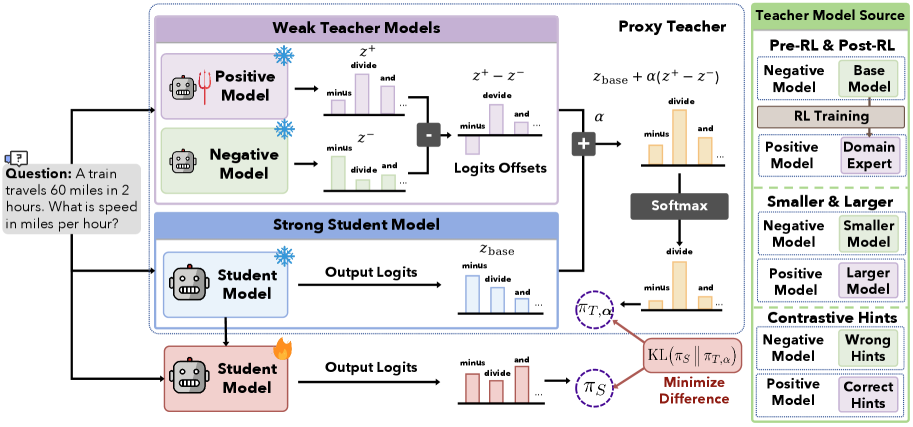
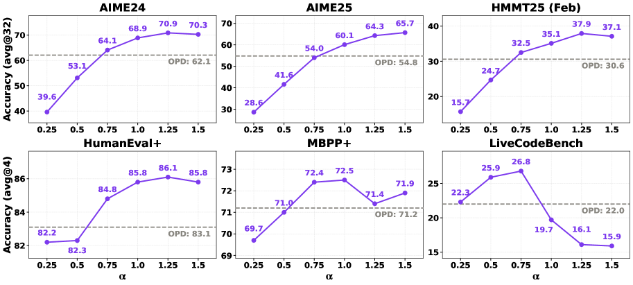

Weak-to-Strong On-Policy Distillation via Proxy-Teacher Logit Contrast (Microsoft)
Paper: "Weak-to-Strong On-Policy Distillation" (arXiv 2607.26246, v2 Aug 3 2026). Authors: Fangxu Yu (UMD, work done during MSR internship), Weijia Xu, Michael Xu, Zinan Lin (Microsoft Research), Tianyi Zhou (MBZUAI). Code (announced): github.com/Yu-Fangxu/W2S-OPD; project page: w2s-opd.github.io.
TL;DR
- On-policy distillation assumes a teacher at least as strong as the student — dead end at the frontier, and expensive when it means training domain experts at student scale. W2S-OPD synthesizes a proxy teacher in logit space: take a contrast pair of weak models, subtract their logits to isolate a capability direction, add it to the student's own base model, distill with per-token reverse KL on student rollouts.
- Three cheap contrast pairs, all Qwen3: post-RL 4B expert vs. its pre-RL init (isolates what RL instilled), 4B vs. 0.6B base (isolates scale, zero training), and one 4B conditioned on correct vs. wrong hints (isolates instance-level direction). With the RL contrast, the 8B student hits 51.8 avg on competition math — above the 4B-RL teacher's 48.8 and +5.3 over standard OPD; even two untouched base models lift the student +6.0 on math.
- Token-level analysis of where the contrast fires: RL and hint contrasts reinforce Plan/Monitor (reasoning-framework) tokens, the scale contrast reinforces Analyze/Implement (solving-procedure) tokens — different weak signals teach complementary things.
Why this matters
OPD is now a default post-training stage (Qwen3's strong-to-weak pipeline; MOPD-style specialize-then-consolidate at DeepSeek scale), but both prevailing modes presuppose a teacher ≥ student. That premise fails exactly where it matters most: at the frontier there is no larger teacher, and training multiple domain experts at the student's own scale to consolidate them is what makes MOPD-style recipes expensive. Meanwhile naive weak-to-strong distillation fails for two well-understood reasons — the weak teacher's distribution mismatches the student's (weakening the signal), and imitating something weaker caps you at its level and erodes general ability.
W2S-OPD's reframe is the interesting move: weak-to-strong learning is not imitating a weak supervisor, it's isolating and transferring a capability direction. What two weak models share (their common weakness) cancels in the logit subtraction; what remains is the direction along which one improves over the other — a signal the paper argues is largely disentangled from scale and hence portable onto a stronger base. If that holds up beyond Qwen3-8B, it's a recipe for frontier models to keep improving from supervision that is strictly cheaper and weaker than themselves — including signals that are literally free (two already-released checkpoints of different sizes).
The core idea

Figure 2 from the paper: the logit difference between a positive and a negative weak model isolates a capability direction; added to the student's base logits it yields a proxy teacher that is capable in-domain yet distributionally adjacent to the student, which then minimizes per-token reverse KL on its own rollouts.Standard OPD minimizes a per-token divergence against a frozen teacher on the student's own rollouts:
where \(s_t=(x, y_{<t})\) is the student-generated prefix and \(D\) is instantiated as reverse KL (top-\(k\) approximated for efficiency). W2S-OPD keeps this loop but replaces the teacher. Given a positive model \(m^{+}\), a weaker negative model \(m^{-}\), and the student's own base model with logits \(z_{\mathrm{base}}\), the proxy teacher at each position is
where \(z^{\pm}\) are the contrast pair's logits on the same prefix and \(\alpha \ge 0\) is an amplification coefficient trading signal strength against distributional proximity. This is decoding-time expert composition (DExperts-style) turned into a training target. Two birds, one stone: anchoring at the student's base keeps the supervision inside a distribution the student already realizes (fixing the mismatch problem), and the weak models enter only through their difference, never their absolute level (fixing the capability-ceiling problem).
Multi-teacher merging falls out for free — sum several directions on the shared anchor:
with \(\alpha_k\) per-direction strengths; setting \(\alpha_k\in\{0,1\}\) routes each query to its domain's contrast pair, so one distillation run consolidates multiple domains into the student.
How it works
The three instantiations of the contrast pair (all anchored on Qwen3-8B base, the student):
| Setting | Positive \(m^{+}\) | Negative \(m^{-}\) | What the difference isolates |
|---|---|---|---|
| Pre-RL / Post-RL | Qwen3-4B after domain GRPO | same 4B before RL | the skill RL instilled (RL cost paid at 4B, not 8B) |
| Smaller / Larger | Qwen3-4B base | Qwen3-0.6B base | capability from scale — free, no training |
| Correct / Wrong hints | 4B + correct hint | 4B + wrong hint (same format) | instance-level direction to the solution; format shift cancels |
Setup: student is Qwen3-8B non-thinking; a frozen copy serves as anchor. The 4B math expert is GRPO-trained 500 steps on DeepMath-103K level-6, the code expert 300 steps on Eurus-RL-Code. Both W2S-OPD and the OPD baseline train 100 steps under identical configs. Evaluation: AIME24/25, HMMT25 (Feb./Nov.) for math; HumanEval+, MBPP+, LiveCodeBench-V6 for code; 32 samples/problem (math) and 4 (code) at temperature 1.0.
# W2S-OPD training step (from Secs. 2-3)
frozen: z_base (student's base), {(m+_k, m-_k)} # contrast pairs
trainable: student π_S (init = base)
for step = 1..100:
sample prompts x ~ D
y ~ π_S(·|x) # on-policy rollouts
for each token position t in y:
s_t = (x, y_<t)
compute logits z_base(s_t), z+_k(s_t), z-_k(s_t) # 3 fwd passes
# (multi-teacher: route query to its domain pair, α_k ∈ {0,1})
π_T = softmax(z_base + Σ_k α_k (z+_k − z-_k)) # proxy teacher
loss_t = KL(π_S(·|s_t) || π_T(·|s_t)) # reverse KL, top-k
update π_S on Σ_t loss_t
# α: too small → signal ~ base model, weaker than OPD;
# too large → teacher drifts off-distribution; moderate is best
The paper also gives an interpretation of the objective as reward maximization under a KL trust region (Appendix B), and a diagnostic for what each contrast teaches: score every token of a shared student-generated solution by
i.e., how strongly the capability direction reinforces the realized token \(x_t\); then classify the top-1% highest-\(\Delta\) tokens into Schoenfeld problem-solving episodes with an automatic classifier (ThinkARM) over 200 math traces.
Results
Pre-RL/post-RL contrast (Table 2). Math avg: negative 4B 14.9, positive 4B-RL 48.8, student base 17.0. Single-teacher: SFT 45.7, OPD 46.5, W2S-OPD 51.8 (+5.3 abs / 11.4% rel over OPD, and above the teacher). Code avg: OPD 58.7, W2S-OPD 60.9 (teacher 61.5 — gap narrowed, not crossed). Multi-teacher (math+code experts merged): W2S-OPD 52.1 math / 61.1 code vs. OPD's 46.5 / 59.5. Training curves show W2S-OPD ahead of OPD throughout.
Smaller/larger contrast (Table 3). With only off-the-shelf Qwen3-4B (14.9 math) and 0.6B (1.7 math) — both far below the 17.0 student — the student still gains +6.0 math / +1.2 code absolute over its base. Purely free supervision.
Hint contrast (Table 4). One 4B model plus reference solutions: +1.4 math / +1.1 code. Smallest gains, but cheapest construction requiring a single weak model.
\(\alpha\) sweep (Fig. 4). Performance is an inverted U: small \(\alpha\) underperforms OPD (signal barely injected), moderate \(\alpha\) is best, large \(\alpha\) declines as the proxy teacher drifts from the student's distribution — matching the theory of the trade-off.

Figure 4 from the paper: W2S-OPD beats the OPD reference (gray line) over a wide range of \(\alpha\), with degradation at both extremes — too little injected direction or too much distributional drift.OOD (Table 5). Trained only on math: GPQA-Diamond 38.9 → 56.5 (OPD: 54.4); on IFBench OPD degrades the student below base (25.9 vs. 26.3) — absorbing the small expert's limitations — while W2S-OPD improves it to 27.0. The anchor really does protect general capability.
Token analysis (Table 6). Relative to the all-token distribution, the RL contrast shifts top-\(\Delta\) mass to Plan (15.7 vs. 8.6 base) and Monitor; the scale contrast keeps mass on Analyze/Implement; the hint contrast concentrates 16.4% on Answer tokens (an artifact of conditioning on answers) plus Plan (20.2). Complementary signals, which is presumably why merging directions works.
How it connects
- OPD-Squared / On-Policy Delta Distillation (this list): the closest relative. OPD² distills the delta between a teacher's tuned and base versions; W2S-OPD generalizes the same "contrast isolates the added capability" insight, but re-anchors the direction on the student's base — which is what unlocks weak-to-strong (the pair can be smaller than the student) and multi-direction composition. Worth reading side by side.
- OPD Isn't a Free Lunch / MOPD (this list): two of that thread's failure modes are precisely what W2S-OPD targets — stronger teachers transferring less when distributional overlap is low (here the teacher is constructed to be adjacent), and the cost of training expert teachers (here RL runs at 4B). The third failure mode (per-token KL can't fix early wrong turns) applies to W2S-OPD unchanged.
- OPD Survey (this list): slots W2S-OPD into the taxonomy as a new supervision-source axis: not strong-to-weak, not same-origin consolidation, but synthesized-teacher weak-to-strong. The survey's open question "where does frontier supervision come from?" is exactly this paper's discussion section.
- Multi-Turn OPD via Teacher Replay (this list): orthogonal axis — ReOPD fixes where states come from in multi-turn OPD, W2S-OPD fixes who the teacher is. An agentic version of W2S-OPD would have to confront ReOPD's prefix-trap findings; nothing here is multi-turn yet.
Critical take
The result that most needs scrutiny is also the headline one: surpassing the teacher. It's shown convincingly only in the RL-contrast math setting (51.8 vs. 48.8); on code the student stays below the expert, and the scale/hint contrasts deliver much smaller gains (+1.1 to +6.0). Everything is Qwen3-family, non-thinking mode, 100 training steps — one architecture, one scale ratio (4B→8B), short horizon. Whether a "capability direction" extracted at 4B remains meaningful when the anchor is 200B rather than 8B is the actual frontier-relevant question, and it is asserted (directions are "largely disentangled from model scale") rather than tested beyond this single ratio. Note also the requirement that all pair members share the student's vocabulary/tokenizer for logits to be subtractable — fine within Qwen3, restrictive across families (inferred from the construction — verify in the paper). Cost is real too: every training token needs forward passes through three extra frozen models (base anchor + positive + negative), though all are small. And \(\alpha\) is a genuine hyperparameter with an inverted-U response — a wrong guess underperforms vanilla OPD, and the paper offers no principled selection rule. Finally, the concurrent Direct-OPD (Feng et al. 2026) transfers the same pre/post-RL log-ratio as a dense reward, so the RL-contrast idea is in the air; W2S-OPD's distinctive contributions are the base-model re-anchoring, the multiple contrast sources, and the multi-direction composition. Those are good contributions — the elegant part is that this is DExperts-style logit arithmetic promoted from a decoding trick to a supervision synthesizer.
If you remember three things
- Proxy teacher = student base + α·(weak-positive − weak-negative) in logit space: the subtraction cancels shared weakness and isolates the capability direction; the anchor keeps the target distributionally adjacent to the student. Reverse-KL OPD on student rollouts does the rest.
- Weak supervision comes in at least three cheap flavors — RL-instilled skill (post-RL vs. pre-RL), scale (4B vs. 0.6B, free), and privileged context (correct vs. wrong hints) — and they teach different tokens: framework (Plan/Monitor) vs. procedure (Analyze/Implement).
- An 8B student beat its 4B-RL teacher on competition math (51.8 vs. 48.8) and improved from strictly weaker sources — while OPD from the same expert degraded instruction-following below baseline. Anchoring, not imitation, is what makes weak-to-strong distillation work.